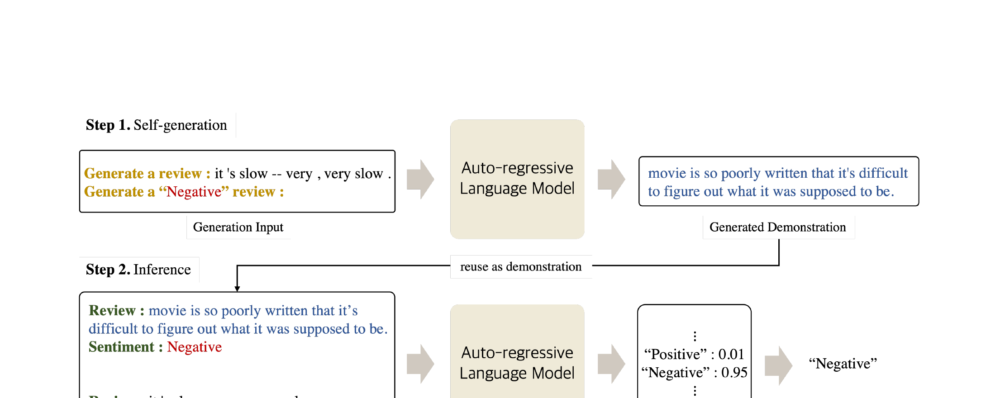

대규모 언어 모델이 테스트 입력에 조건화하여 자체적으로 인컨텍스트 시연을 생성함으로써, 외부 학습 데이터 없이도 제로샷 학습을 크게 능가하고 골드 샘플 기반 퓨샷 학습에 근접하는 텍스트 분류 성능을 달성하는 방법입니다.

인컨텍스트 학습(ICL)은 사전학습 언어 모델이 소수의 입력-레이블 시연 쌍을 조건으로 하여 파라미터 업데이트 없이 과제를 해결할 수 있게 합니다. 이 패러다임은 매우 효과적이지만, 치명적인 한계가 있습니다: 성능이 시연의 품질, 선택, 순서에 매우 민감하며, 이 시연은 보통 외부 레이블 데이터셋에서 선택됩니다. 선행 연구에 따르면 시연의 무작위 선택에 따라 동일 과제에서 30 퍼센트 포인트 이상의 정확도 차이가 발생할 수 있습니다.
또한 표준 ICL은 시연을 추출할 레이블 학습 데이터의 존재를 전제로 합니다. 이 가정은 현실적인 저자원 환경에서 ICL의 적용 가능성을 제한합니다. 시연 민감성을 완화하기 위한 기존 접근법—검색 기반 선택 전략 등—도 여전히 레이블 예시 풀이 필요합니다.
핵심 통찰: 대규모 자기회귀 언어 모델은 이미 방대한 세계 지식을 내재하고 있으며 유창한 텍스트를 생성할 수 있습니다. 이 생성 능력을 활용하여 테스트 입력에 조건화된 시연을 즉석에서 생성할 수 있다면? 이를 통해 (1) 외부 학습 데이터 의존성을 제거하고 (2) 각 테스트 인스턴스에 의미적으로 정렬된 시연을 생성하여 분산을 줄일 수 있습니다.
자기 생성 인컨텍스트 학습(SG-ICL)은 사전학습 언어 모델의 자기회귀 생성 능력을 활용하여 자체 시연을 생성합니다. 핵심 아이디어는 테스트 입력과 각 후보 클래스 레이블 모두에 조건화하여, 특정 테스트 인스턴스와 의미적으로 상관관계가 높은 시연을 생성하는 것입니다. 방법은 두 단계로 구성됩니다:
"[테스트 입력] is [레이블]. Similarly, [생성 텍스트]" 형태로 구성됩니다. 입력과 레이블 모두에 조건화함으로써 모델은 테스트 인스턴스와 주제적으로 관련되면서 해당 클래스와 연관된 텍스트를 생성합니다. 이를 모든 클래스에 대해 반복하여 총 k × |C|개의 시연을 생성합니다 (|C|는 클래스 수).핵심 설계 선택은 입력 조건화 생성 vs. 클래스만 조건화 생성입니다. 클래스 레이블에만 조건화하면(테스트 입력 없이) 각 클래스의 일반적인 예시가 생성됩니다. 테스트 입력에도 추가로 조건화하면 SG-ICL은 테스트 인스턴스와 의미적 유사성이 훨씬 높은 시연을 생성하며, 이는 선행 연구에서 ICL 성공의 핵심 요소로 밝혀진 바 있습니다.
4개의 텍스트 분류 벤치마크에서 GPT-J(6B 파라미터)를 백본 모델로 실험하였으며, 클래스당 k = 4개의 자기 생성 샘플을 사용합니다 (이진 과제 시 총 8개, SST-5 시 총 20개).
| 방법 | SST-2 | SST-5 | RTE | CB |
|---|---|---|---|---|
| 제로샷 | 67.4 | 30.8 | 50.2 | 32.1 |
| 골드 ICL (k=1) | 77.9 | 33.3 | 52.8 | 41.1 |
| 골드 ICL (k=4) | 87.7 | 38.2 | 53.3 | 46.4 |
| SG-ICL (k=4, 제안) | 85.6 | 35.9 | 54.9 | 48.2 |
SG-ICL은 언어 모델이 외부 데이터 없이도 자체적으로 시연을 부트스트랩할 수 있는 새로운 패러다임을 개척합니다. 이는 여러 중요한 시사점을 가집니다: